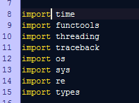
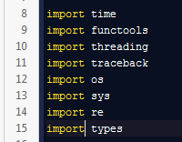
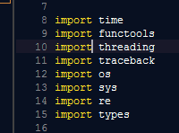
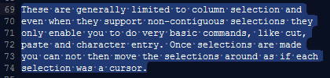
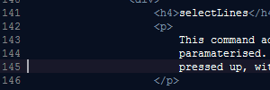
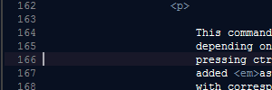
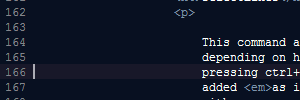
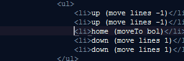

Most editors that implement multiple selections do so in a very limited way, bolted on to an exisiting editor control, implemented via special modes.
These are generally limited to column selection and even when they support non-contiguous selections they only enable you to do very basic commands, like cut, paste and character entry. Once selections are made you can not then move the selections around as if each selection was a cursor.
|  |
Note that there is only ever one cursor at a time and once selections are made they are immovable |
|  |
Note the singular cursor and the inability to extend the selections to word ends when using ctrl+shift+right It just selects |
Sublime was designed from the ground up to be fully capable of using multiple selections so EVERY command is available from multiple selections. Unlike most (all?) other editors each selection is moveable.
They are not just moveable in the basic sense of each cursor moving the same amount,
you can do commands like move to word ends
which will move each selection
differing amounts. This allows the selections to transcend mere detail and
follow the underlying structure.
|  |
Note the multiple cursors and ability to move each. Starting the column in random position vertically and then extending downwards and upwards. Extending selections to word ends. |
This enables a different workflow. Where before you'd make homogeneous edits via the use of regular expressions and macros with Sublime a lot of the time you can make the edit all at once which not only has a nice controlled feel to it, sometimes it is actually more efficient in terms of key presses.
Sublime's search facility has a findAll
command which will actually
select each find instead of highlight them.
The mini-map with which you
can see/feel what is happening with your multiple
selections really comes into its own.
All this to say that Sublime acts differently and as such you may need to adjust your habits to get the most out of it. Fortunately it's very easy to do so; multiple selections can be quite an intuitive way of working.
|  | Press ctrl+shift+l to split contiguous selections spanning multiple lines into lines. |
There is no special column selection
mode in
Sublime per se. Rather it's just a label for multiple selections
that happen to be aligned. Multiple selections are the default
modus operandi.
selectLinesbound to ctrl+alt+up, ctrl+alt+down
To select columns from the keyboard you first select vertically and then horizontally
This (keyboard driven) command adds a new cursor in a direction depending on how the command was paramaterised (up or down)
It's important to understand the path-finding behaviour in order to be able to consistently control the command. Don't be put off. It's actually easy. It can just be frustrating if you aren't aware of how it works.
If pressing ctrl+alt+up, an extra cursor will be added on the same path as if you pressed up, with corresponding similar behaviour when pressing down.
|  |
|
|  | Using |
|  |
Unwise path choice except the
|
Sublime is scriptable so it's possible to write your own auto selection commands.
|  |
Note the ability to start in the middle and the auto path finding behaviour. It automatically stops on the |
The findAll
command will give you multiple selections with which you can move around and see each replacement.
The minimap is especially handy.
splitSelectionIntoLinescommand
findAllUndercursor
Comments
blog comments powered by Disqus